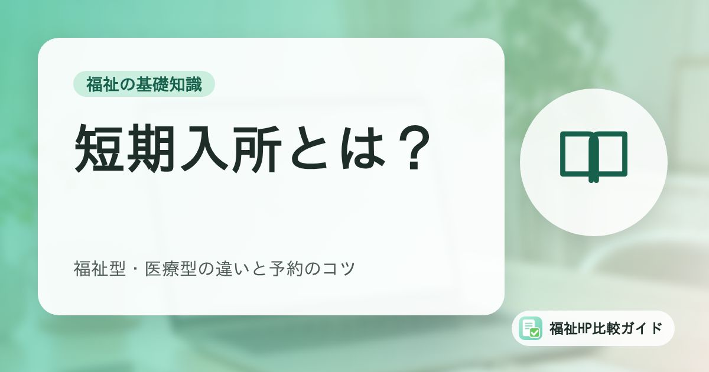

短期入所（ショートステイ）とは？福祉型・医療型の違い、対象者、利用日数の目安と予約のコツ

家族の病気や冠婚葬祭、介護する家族の休息（レスパイト）のために、障害のある方が短期間施設に宿泊して介護を受けられるのが短期入所（ショートステイ）です。将来のグループホーム入居や一人暮らしに向けた「宿泊の練習」として使われることもあります。
この記事でわかること
- 短期入所の目的と、主な支援内容
- 福祉型と医療型の違い、対象者
- 施設の形態（併設型・空床型・単独型）
- 利用日数の目安、利用料、予約のコツ
短期入所（ショートステイ）とは
短期入所は、障害者総合支援法にもとづく「介護給付」のサービスです。自宅で介護を行っている方が病気などの理由で介護できない場合に、障害のある方が障害者支援施設や児童福祉施設などに短期間入所し、入浴、排せつ、食事などの介護を受けます。
利用される主な場面は次のとおりです。
- 家族の病気、出産、冠婚葬祭、出張など
- 介護する家族の休息（レスパイト）
- 本人の生活経験の幅を広げる、将来の自立に向けた宿泊の練習
- 災害時や緊急時の一時的な受け入れ
短期入所は、「急なときに使える」ことが伝わるホームページを
家族が探すのは、緊急時に受け入れてもらえるかどうかです。受け入れ状況を更新しやすい制作会社は、福祉事業所向けの比較記事で探せます。
福祉型と医療型の違い
| 種類 | 主な実施場所 | 主な対象者 |
|---|---|---|
| 福祉型短期入所 | 障害者支援施設、グループホーム、単独の短期入所事業所など | 障害支援区分1以上の方、支援の度合いに応じた区分1以上の障害児 |
| 医療型短期入所 | 病院、診療所、介護老人保健施設など | 医療的な管理が必要な方（重症心身障害児・者、遷延性意識障害の方、ALSなど運動ニューロン疾患の方など） |
医療的ケアが必要な方を受け入れるため、看護職員を手厚く配置した「福祉型強化短期入所」という形態もあります。
施設の形態
| 形態 | 特徴 |
|---|---|
| 併設型 | 障害者支援施設などに併設された短期入所専用の居室を使う |
| 空床型 | 障害者支援施設やグループホームの空いている居室を使う |
| 単独型 | 短期入所だけを行う独立した事業所 |
グループホームに併設・空床利用されている短期入所は、将来グループホームへの入居を考えている方が、生活の様子を体験する場にもなります。日中サービス支援型のグループホームには短期入所の併設が求められています。グループホームの種類は「障害者グループホームの種類と違い」で解説しています。
利用日数の目安
短期入所は、あくまで「短期間」の利用を前提としたサービスです。
- 1か月に利用できる日数は、市町村が支給決定の際に決める
- 一般的に、年間の利用日数が支給決定の有効期間のおおむね半分を超えないことが目安とされている
- 長期間の連続利用には制限があり、長期化する場合はグループホームや施設入所など、ほかの住まいの検討が必要になる
利用できる日数や連続利用の扱いは市町村によって運用が異なる場合があるため、窓口で確認してください。
利用料
利用者負担はサービス費用の1割が原則で、所得に応じた負担上限月額があります。ほかのサービスと合わせて上限額が適用されます。
このほか、食費、光熱水費、日用品費などは実費負担です。宿泊を伴うため、通所のサービスよりも実費がかかる点に注意しましょう。
予約のコツと事前準備
短期入所は地域によって受け入れ枠が不足しており、予約が取りにくいことが少なくありません。
- 支給決定を先に受けておく：使う予定がなくても、受給者証に短期入所の支給決定を入れておく
- 早めに予約する：連休や年末年始は特に混み合う。予約開始日を確認しておく
- 事前に体験利用しておく：初めての場所に慣れるため、日帰りや1泊から試す
- 本人の情報を共有する：服薬、食事の形態、こだわり、コミュニケーションの方法、緊急連絡先などを書面にまとめて渡す
- 複数の事業所を確保する：1か所だけに頼らず、利用できる事業所を複数確保しておく
相談支援専門員と一緒に計画を
緊急時の利用も含めて、短期入所をどう使うかは、相談支援専門員と一緒にサービス等利用計画に盛り込んでおくと安心です。詳しくは「計画相談支援とは」をご覧ください。
まとめ
短期入所（ショートステイ）は、家族の病気や休息、本人の宿泊体験などのために、障害のある方が短期間施設で介護を受けられるサービスです。福祉型と医療型があり、医療的ケアが必要な方は医療型や福祉型強化短期入所を利用します。
受け入れ枠が限られる地域も多いため、支給決定を先に受けておき、体験利用や複数の事業所の確保など、いざというときに備えた準備をしておきましょう。
空き状況や受け入れ条件を、ホームページで伝えるために
空き状況は変わりやすいため、更新しやすさが重要です。グループホームを併設している場合は障害者グループホーム向けホームページ制作会社比較も参考に、福祉事業所向けホームページ制作会社比較とあわせて、費用と更新方法を比べてみてください。
よくある質問
急に家族が入院した場合でも利用できますか？
空きがあれば緊急で受け入れてもらえる場合があります。ただし、受給者証に短期入所の支給決定がないと利用できないため、普段使う予定がなくても、あらかじめ支給決定を受けておくと安心です。地域生活支援拠点として緊急時の受け入れ体制を整えている自治体もあります。
障害のある子どもも利用できますか？
利用できます。障害児の場合は、支援の度合いに応じた区分が1以上に該当することが条件です。児童の受け入れに対応している事業所かどうか、事前に確認してください。
日中だけの利用はできますか？
宿泊を伴わない日中のみの短期入所を実施している事業所もあります。また、日中の預かりには、市町村の地域生活支援事業である日中一時支援が使える場合もあります。市町村の窓口で利用できるサービスを確認してください。
参考資料・出典
制度・料金・統計は改定される場合があります。最新の内容は各出典の公式情報でご確認ください。